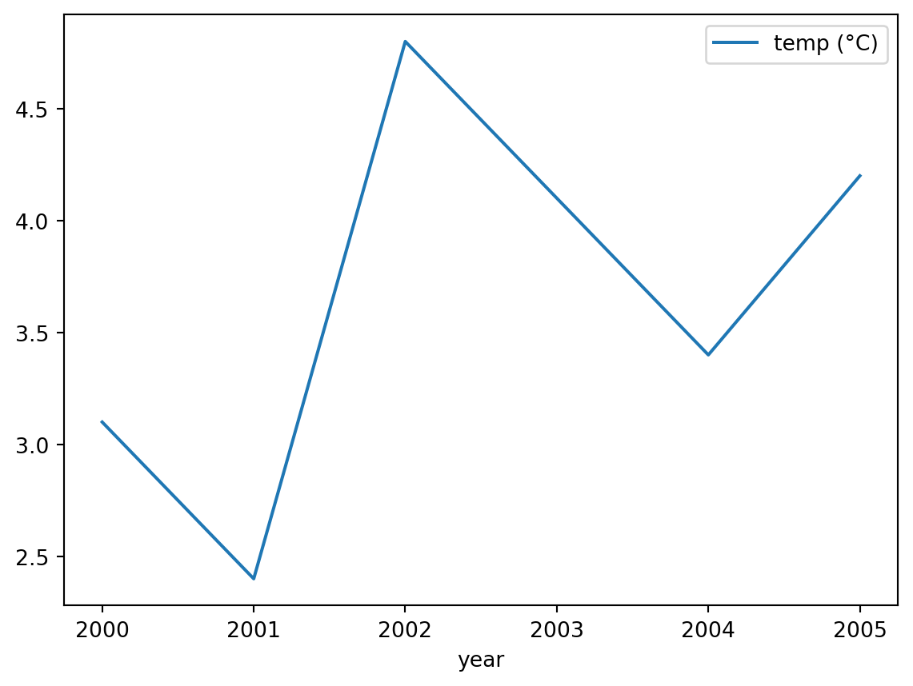

print("Hello, Python!")Hello, Python!This course will use a tool called Jupyter Notebooks to run your Python code. Once Jupyter Lab is open, to open a Notebook go to File > New > Notebook or click the Python 3 button under Notebook section in the Launcher tab.
Once the notebook is launched, you will see a wide grey box with a blue [ ]: to the left. The grey box is an input cell where you type any Python code you want to run. For instance, type:
print("Hello, Python!")Then, to run the cell click the button (▶) in the toolbar at the top or press Ctrl-Enter or Shift-Enter with the cursor inside. The output will appear below when the cell is run:
print("Hello, Python!")Hello, Python!Congratulations, you’ve just written and executed your very first Python code!
Python have special integration with Jupyter Notebooks and so can display their output directly into the page. For example pandas will format tables of data nicely and matplotlib will embed graphs directly. Try copying the below code into a new cell and run it (we don’t expect you to understand it):
import pandas as pd
temp = pd.DataFrame(
[3.1, 2.4, 4.8, 4.1, 3.4, 4.2],
columns=["temp (°C)"],
index=pd.RangeIndex(2000, 2006, name="year")
)
temp| temp (°C) | |
|---|---|
| year | |
| 2000 | 3.1 |
| 2001 | 2.4 |
| 2002 | 4.8 |
| 2003 | 4.1 |
| 2004 | 3.4 |
| 2005 | 4.2 |
temp.plot()
It is good practice to add comments to your code so it is easy to understand by other programmers or even yourself after a few months. This is particularly important if there’s anything non-obvious in your code. To add a comments you can use a # symbol at any position in your script, what is behind ‘#’ will be ignored by Python when running that line of code.
# This script prints my favourite colour
# print("Don't print me!")
print("My favourite colour is red") # print my favourite colourMy favourite colour is red